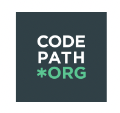

Growing up, I’ve always been a creator. Constantly coming up with ideas and
finding ways to bring them to life. Once I discovered I could turn those ideas
into real, working projects through code, everything changed. I fell in love
with the freedom of frontend development, making things look exactly how I envisioned.
But what surprised me most was how much I started enjoying backend. I recently picked up on
Python and quickly became obsessed with solving coding challenges. There’s something
addicting about cracking a tough problem, especially on the first try. That’s when I knew I belonged in tech.
Certifications & Ongoing Learning

CodePath: Intro to Technical Interview Prep
In Progress · Summer 2025
A competitive, instructor-led course designed to build confidence and skills for technical interviews through live classes and weekly assignments.
Uses the UMPIRE strategy for structured interview problem solving
Covers data structures and algorithm patterns across 10 weekly units
Includes hands-on coding practice in HackerRank and weekly technical challenges
CS50's Introduction to Programming with Python (HarvardX)
In Progress · Self-Paced
A foundational course from HarvardX designed to teach core programming concepts using Python.
Explores fundamental topics like variables, functions, conditionals, loops, and exceptions
Dives deeper into unit testing, file I/O, regular expressions, and object-oriented programming
Includes 10 weeks of lectures and corresponding problem sets
Datacom Software Development Job Simulation
Completed · July 2024
Completed a hands-on simulation to experience how Datacom’s software team works, including software review and bug resolution.